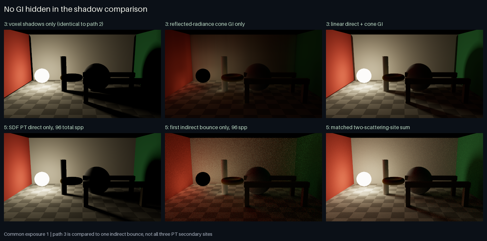
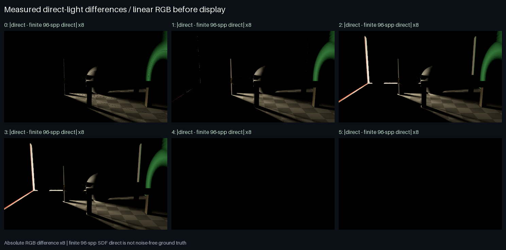
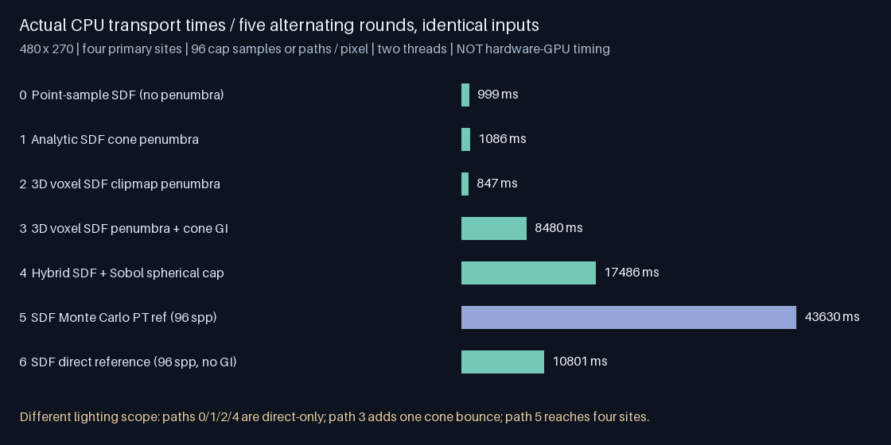
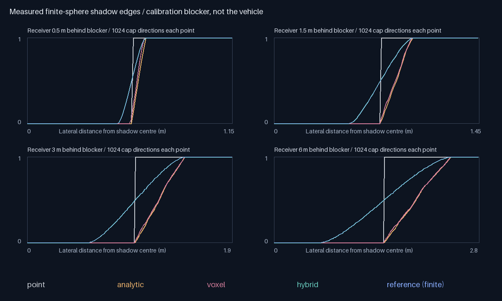
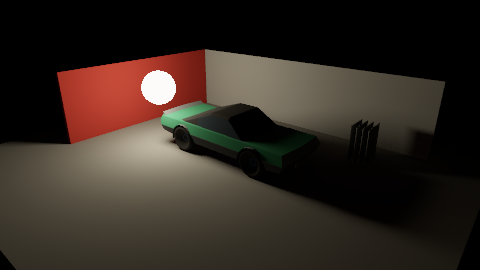
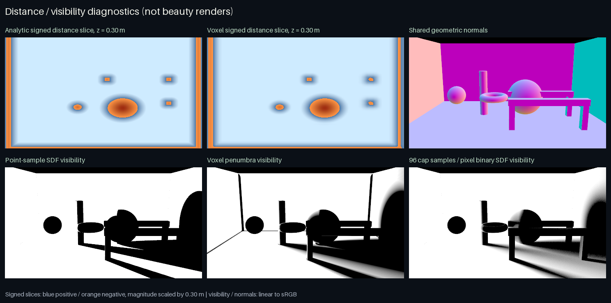

The six requested paths
Native 480 × 270 each · Float32 transport · exposure 1 · Reinhard → sRGB · no Sun, sky, ambient fill or denoising.
Paths 0 / 1 / 2 / 4 intentionally contain direct lighting only. Path 3 adds one cone-GI bounce; path 5 reaches four scattering sites.
GI is not a better shadow filter
Path 3’s shadow component is bit-identical to path 2. Its added GI is compared to the reference’s first indirect bounce—not its deeper, brighter full image.

Measured—not copied from the reference picture
Linear Float32 differences against finite 96-spp SDF direct lighting. Lower RMSE is closer to this noisy finite reference, not a claim of physical truth.
| Path | Direct RGB RMSE | Floor RMSE | Median CPU transport |
|---|
Five alternating rounds after warmup, two CPU threads. Setup, primary tracing and PNG encoding excluded. Lighting scopes differ; these are not hardware-GPU timings or a production replacement gate.
Native direct-difference maps ×8

Repeated CPU timings and calibrated penumbra profiles


Also checked: the actual moving ControlVehicle

Execution checks
Signed fields, normals and visibility diagnostics

SDF hit tolerance 0.4 mm; origin offset 2 mm. Four shared primary positions × 24 paths = 96 total paths per pixel. PT has a four-site depth limit and visible finite-sample noise. Voxel corner/contact errors and cone detail loss remain visible. Windows/editor, physical GPU and 60/120 Hz pacing remain unverified.